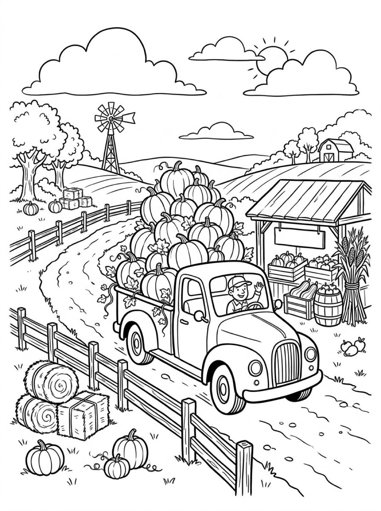
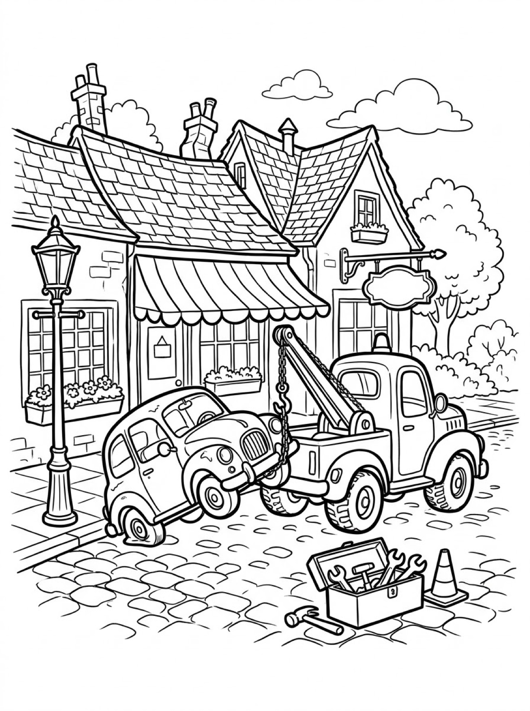

Free Truck Coloring Pages Dump Truck, Farm Pickup & Tow Truck Printables
These free truck coloring pages give your child three hard-working trucks to color — a dump truck tipping its load of gravel, a farm pickup piled high with pumpkins, and a tow truck on a rescue run. Download the set below, print at home on letter-size paper, and let the coloring fun begin. No signup needed.
Last updated: October 21, 2026
Quick Answer
Yes — this page has three free printable truck coloring pages: a dump truck unloading gravel at a construction site, a farm pickup stacked sky-high with pumpkins, and a tow truck lifting a little car on a cobblestone street. Bold outlines and big spaces, made for little hands. Download, print on letter-size paper, and hand over the crayons — no signup, no cost.
At a Glance
- Ages: 3–8
- Pages: 3 free printables
- Format: Print at home, letter size
- Cost: Free, no signup
- Supplies: Crayons or markers
- Time: 10–20 minutes
🚚 Dump Truck at the Construction Site Coloring Page

🎨 Download Your Free Dump Truck Coloring Page
A dump truck tipping its bed to unload a load of gravel, with a tower crane, a half-built brick wall and a wheelbarrow of sand around it — bold outlines, big spaces, zero signup.
⬇️ Download Free Dump Truck Page 🖨️ Print Dump Truck Page🎁 Free printable for preschoolers & kids
🚚 Farm Pickup Full of Pumpkins Coloring Page

🎨 Download Your Free Farm Pickup Coloring Page
A friendly farm pickup loaded to the sky with pumpkins, parked by a farm stand with hay bales, fences and a windmill down the dirt road — bold outlines, big spaces, zero signup.
⬇️ Download Free Pickup Page 🖨️ Print Pickup Page🎁 Free printable for preschoolers & kids
🚚 Tow Truck to the Rescue Coloring Page

🎨 Download Your Free Tow Truck Coloring Page
A tow truck hoisting a little broken-down car by its hook, an open toolbox of wrenches at the ready on a cobblestone street — bold outlines, big spaces, zero signup.
⬇️ Download Free Tow Truck Page 🖨️ Print Tow Truck Page🎁 Free printable for preschoolers & kids
More Coloring Pages
Tap any picture to open its theme page and download the free printable.


🚚 How To Use This Page
- Browse the three designs and pick the truck your child will love most.
- Tap download or print under that design — the file opens full-size, ready for letter-size paper.
- Print a couple of copies so your child can try the same truck in different colors.
- Color together with crayons or markers and display the favorites.
🚚 Why Kids Love Truck Coloring Pages
Trucks are the machines kids point at through the car window — the bigger and louder, the better. Each truck on this page has a real job to do: the dump truck is mid-delivery at a construction site, the pickup is hauling a mountain of pumpkins, and the tow truck has arrived to save the day. That built-in story gives kids something to think about while they color, and plenty to talk about when they finish.
Trucks also happen to be perfect coloring subjects for beginners. They are made of big, simple shapes — a wide bed, a square cab, two round wheels — so little hands can fill whole panels with color and feel proud of the result. Print the same design twice and it never comes out the same: the dump truck can be construction yellow on Monday and bright blue on Friday, and both versions are exactly right.
🚚 Meet the Three Trucks on This Page
The dump truck at work. A dump truck carries loose loads like gravel and sand in a big open bed. When it reaches the site, a lifting arm raises the front of the bed and the whole load slides out the back — which is exactly what this truck is doing, gravel pouring onto the ground. Around it stand a tall tower crane (its long arm lifts heavy loads high into the air), a half-built brick wall, a wheelbarrow of sand, shovels, and bright traffic cones that tell everyone to keep clear while work is happening. The driver in the cab is smiling — this is the best part of his job.
The farm pickup and its pumpkins. A pickup truck has an open bed at the back for hauling, and this one is stacked impossibly high with pumpkins on a dirt road. Next to it sits a farm stand with crates of produce and a blank hanging sign — your child can write the stand's name on it, draw a price, or leave it plain. A windmill, hay bales and split-rail fences stretch out behind, and the driver waves from the cab.
The tow truck on a rescue run. When a car breaks down and cannot drive, a tow truck comes to help. Its crane arm and chain end in a strong hook that lifts the car's front wheels off the ground, so the car can be towed safely to a garage for repairs. This one is working on a cobblestone street in front of storybook cottages, with its toolbox open — wrenches ready — a traffic cone set out, and another blank hanging shop sign for your child to decorate.
✏️ Truck Coloring Tips
- Pick the truck's color first. Dump trucks are often yellow and tow trucks often blue, but farm pickups come in every color — there is no wrong answer, and a purple tow truck rescues cars just as well.
- Make the safety details pop. Traffic cones are bright orange for a reason: they are meant to be seen. Coloring the cones first gives the whole construction scene its energy.
- Count the pumpkins. The pickup's load makes a natural counting game — how many pumpkins can your child find before the coloring starts? Then try coloring them in two or three different oranges.
- Fill in the blank signs. Both the farm stand and the little shop have empty hanging signs. Older kids can letter a name or draw a tiny picture inside — it is the one part of the page designed to be drawn on, not just colored.
🚚 Coloring Pages for Different Ages
For ages 3 to 4, start with the farm pickup. The pumpkins are huge, round and forgiving, the truck's panels are wide, and there is no fussy detail to worry about. Scribbling is fine at this age — they are learning how crayons move and how hard to press, and a finished pumpkin is a finished pumpkin.
For ages 5 to 6, the dump truck is the sweet spot. The truck itself is still one big, bold shape, but the scene around it adds real choices: gray gravel or brown? Red bricks or tan? What color is the crane? Kids this age enjoy deciding the whole site, not just the truck.
For ages 7 to 8, hand over the tow truck. It carries the most detail — cobblestones under the wheels, tools in the open toolbox, cottage windows, roof tiles and two signs to fill in — and it rewards careful coloring and patience. Older kids often turn this one into a whole story about where the little car is going.
🚚 More Truck Fun After Coloring
After coloring, ask your child to tell you the truck's story. Where is the dump truck's next load going? What broke on the little car? Who is buying all those pumpkins? Write their answers on the back of the page (or let them dictate while you write) and the sheet becomes a keepsake instead of a throwaway.
Ready to go bigger? The monster truck coloring pages take everything up a size — giant wheels, mud runs and stadium jumps. And when it is time to slow down, the cozy coloring pages offer calm, detailed indoor scenes for a quieter kind of coloring session.
🔗 More Free Printables You’ll Love
- Free Monster Truck Coloring Pages Giant wheels, mud runs and stadium jumps — the biggest trucks on the site.
- Free Dog Coloring Pages A sheepdog, a puppy and a Dalmatian — three friendly dogs to color.
- Free Cozy Coloring Pages Calm, detailed indoor scenes for a quiet coloring session.
- All Free Coloring Pages Browse every free coloring page on the site, organized by theme.
❓ Truck Coloring Pages FAQ
Are these truck coloring pages really free?
Yes — all three designs on this page are free original printables from MomYouNeedThis. Download them, print them at home, and color — no signup and no cost.
What ages are these coloring pages best for?
Kids ages 3 to 8 get the most from this set. The trucks are drawn with big, simple shapes and bold outlines, so younger children can color the main panels, wheels and loads, while older kids enjoy the busier construction-site and cobblestone-street details.
How do I print a coloring page?
Tap the download button under the design you want, then print the file on regular letter-size paper. The print button opens the full-size page in a new tab if you prefer to print from there.
What kinds of trucks are in this set?
Three working trucks: a dump truck that tips its bed to unload gravel at a construction site, a farm pickup stacked high with pumpkins, and a tow truck that lifts a broken-down car with its hook so the car can be taken in for repairs.
Can I make a coloring book from these pages?
Yes — print all three designs, stack them in order, and staple along the left edge. Add a cover sheet with your child's name on it for a finished homemade truck coloring book.